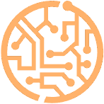

GK Software · landing
Com a assinatura fora do logotipo, “Ideias que viram operação” virou um elemento livre — pode ser o título, o apoio do título, ou uma linha de fecho. Cada posição muda o que o visitante lê primeiro. As telas abaixo são o topo real da página, na largura real.
Sua lockup é vertical, e barra de header é horizontal. A 44px de altura o “SOFTWARE” fica com 6px e vira mancha. Duas saídas honestas:
Lockup vertical na barra

✕ Ou a barra fica alta demais, ou o lettering some. Empilhado não sobrevive a 46px.
Símbolo + nome em texto

GKSOFTWARE✓ O símbolo carrega a marca, o nome fica legível. É a variante horizontal que toda lockup vertical precisa ter.
Isso não desfaz a decisão de ter uma lockup só — a vertical continua sendo a marca. A horizontal é uma aplicação dela para faixa estreita, do mesmo jeito que o símbolo sozinho é a aplicação para 32px.
A frase assume o H1. Máximo de presença, e o visitante lê o posicionamento antes de qualquer coisa — mas gasta o espaço mais valioso da página numa frase que não diz o que você faz.
Você traz o problema. A gente devolve o sistema — e continua de pé depois que a gente sai.
A frase vira sobrelinha e o H1 fica com a promessa concreta. O visitante lê o que você entrega primeiro, e a marca assina logo acima.
Sobrelinha + promessa
Ideias que viram operação
Software sob medida para quando a planilha não dá mais conta e o sistema de prateleira não serve.
Hero centrado com a lockup vertical inteira — aqui ela cabe, porque não é barra. O slogan aparece embaixo, no papel que tinha na sua imagem, só que com espaço pra ser lido.
Software sob medida para quando a planilha não dá mais conta e o sistema de prateleira não serve.
Ideias que viram operação
Tratamento 2 é o que eu levaria. O slogan aparece primeiro na leitura, em corpo legível, e ainda assim o título entrega o que a GK faz — que é o que decide se a pessoa rola a página. O 1 é mais bonito e menos útil: quem não conhece a GK não descobre o que você vende. O 3 resolve bem a marca mas empurra a promessa pra baixo da dobra em telas menores, e um hero centrado é mais difícil de sustentar no resto da página.
Como a consultoria também é vendida avulsa, o primeiro bloco depois do hero precisa bifurcar: quem chegou querendo diagnóstico e quem chegou querendo um sistema não leem a mesma coisa. Uma lista única de serviços faria os dois se perguntarem se vieram ao lugar certo.
Ideias que viram operação
Software sob medida para quando a planilha não dá mais conta e o sistema de prateleira não serve.
Frente 1
Seu time constrói, a GK entra como quem já quebrou a cara antes — sem assumir o teclado.
Frente 2
A GK constrói, coloca no ar e sustenta. Você acompanha funcionando, não em apresentação.
As duas frentes ficam lado a lado e com peso igual — nenhuma parece o plano B da outra. Cada uma tem sua própria chamada, porque o compromisso que se pede é diferente: “agendar um diagnóstico” custa muito menos que “falar sobre um projeto”, e quem está só sondando precisa de uma porta do tamanho da dúvida dele.
Os itens das listas são rascunho. Escrevi o que é plausível para o seu perfil, não o que você de fato vende — me corrige que eu troco.
Arquivos gerados nesta rodada, em assets/: gk-lockup.png (transparente, 182×290), gk-simbolo.png (147×147), gk-wordmark.png (182×131), gk-lockup-positivo.png (fundo claro), gk-lockup-mono-branco.png e gk-lockup-mono-preto.png.